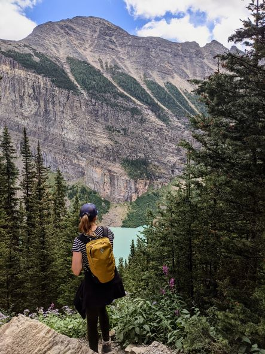
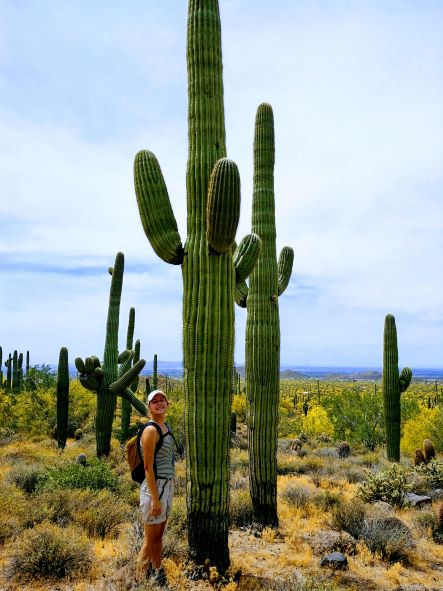

Kira-Marie Lazda
GIS Applications Specialist and Environmental Scientist

Hello!
I am a young environmentalist, keen to make positive change for the Earth through my career and daily choices. Having grown up spending summers camping, hiking and backpacking all over Canada and the United States, it was only natural to end up in the field of environmental science.
I was further drawn to conservation and habitat management due to my love and fascination of animals, however, my education has further peaked my interest in ecosystem-level relationships between animals, plants and the elements. I decided to pursue a graduate program in GIS to be able to take my skillset to the next level and ultimately become a scientist with a broad scope of interests and abilities. Upon graduation, I am aiming to join municipal or NGO conservation efforts in Western Canada!
Travel has always been an important part of my life - I am always eager to hike a new trail and explore different areas of the world! I have volunteered in Guatemala and Thailand, both of which are some of my favorite experiences. Closer to home, I love to spend weekends camping with family and friends, hiking to summits or wandering through marshland - all ecosystems intrigue me.
My time at McGill gave me the opportunity to go on a desert ecology field course in Arizona and California, where I spent a few weeks camping with fellow students and professors. We spent our days observing the natural world, learning from our surroundings and conducting experiments. That trip further drove my desire to pursue a career where I could be in nature. I was also organized to participate in a tropical ecology field course in Barbados in May of 2020 and a research position in the Rockies in summer of 2020, but we all know what went wrong there!
Needless to say, I am excited to travel again soon and hopefully I will be able to integrate these passions of mine into my career someday.
